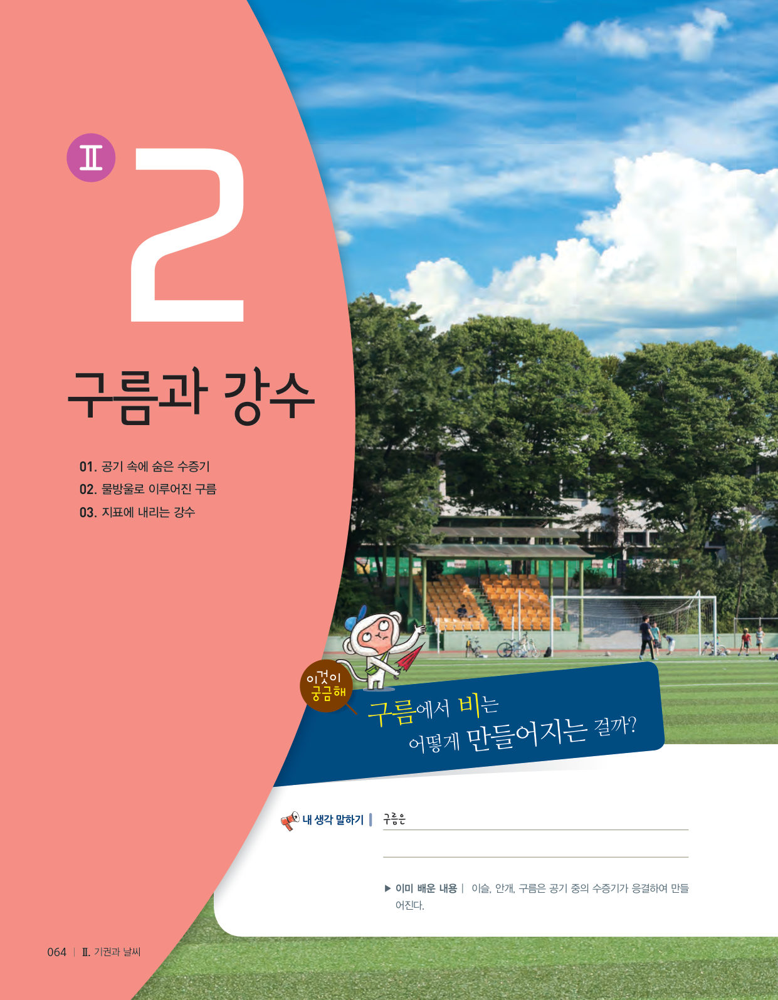
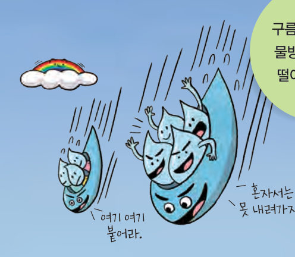
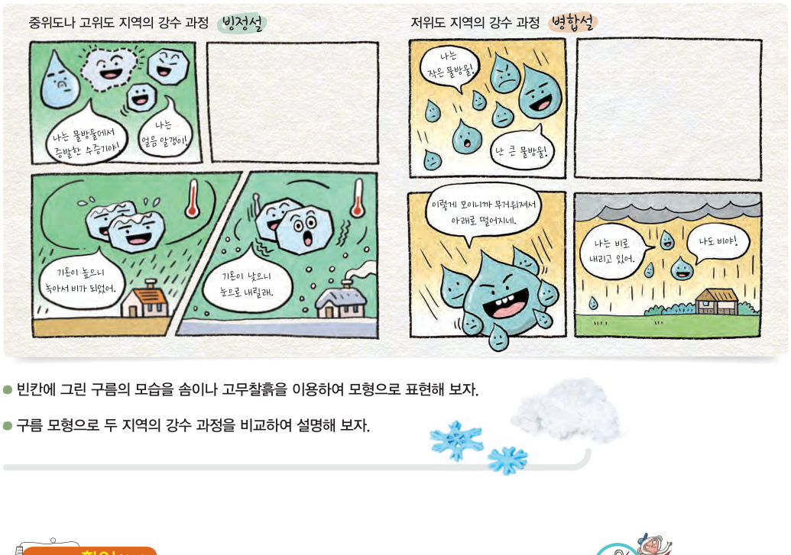

구름으로 떠 있는 물방울은 어떻게 떨어지게 될까? 구름 속을 들여다보며 얼음 알갱이가 자라는 빙정설과 물방울이 합쳐지는 병합설을 비교하고, 지표 기온에 따라 눈과 비가 갈리는 모습을 확인해 보자.
우리나라가 속한 중위도나 고위도 지역에서 만들어지는 구름은 물방울과 얼음 알갱이로 이루어져 있다. 구름의 윗부분은 주로 얼음 알갱이로 이루어져 있고, 중간 부분에는 얼음 알갱이와 물방울이 함께 있으며, 아랫부분은 주로 물방울로 이루어져 있다. 얼음 알갱이는 물방울에서 증발한 수증기가 달라붙어 점점 무거워져 지표면으로 떨어진다. 이때 기온이 낮으면 그대로 떨어져 눈으로 내리고, 기온이 높으면 녹아서 비로 내린다. (빙정설)
한편, 저위도 지역에서는 온도가 0 ℃보다 높은 구름이 주로 만들어지며, 구름은 크고 작은 물방울로 이루어져 있다. 이러한 구름에서는 물방울들이 서로 부딪치면서 합쳐지고 점점 무거워져 비가 되어 내린다. (병합설)
구름에서 지표로 떨어지는 비나 눈 등을 강수라고 한다.

| ⑴ (가)와 (나)의 구름은 모두 윗부분이 주로 얼음 알갱이로 이루어져 있다. | |
| ⑵ (가)의 구름은 기온이 낮으면 눈을 내린다. | |
| ⑶ (나)의 구름은 물방울에서 증발한 수증기가 얼음 알갱이에 붙어 비를 내린다. | |
| ⑷ 우리나라에서는 (나)의 구름이 만들어진다. |
| 평가 기준 | 스스로 평가 |
|---|---|
| 강수 과정을 모형으로 표현할 수 있다. | |
| 중위도·고위도와 저위도 지역의 강수 과정을 비교하여 설명할 수 있다. |